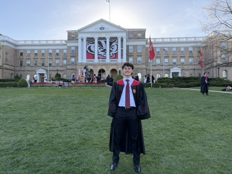

Neurobiology graduate and entrepreneur
Conrad Youngquist
Welcome to my personal website. I am a University of Wisconsin-Madison graduate with a degree in Neurobiology and an interest in combining science, practical problem-solving, and entrepreneurship.
View my landscaping project
About This Website
This site highlights my education, professional strengths, entrepreneurial work, and interests. Use the navigation above to learn more about my background and the experiences that have shaped me.